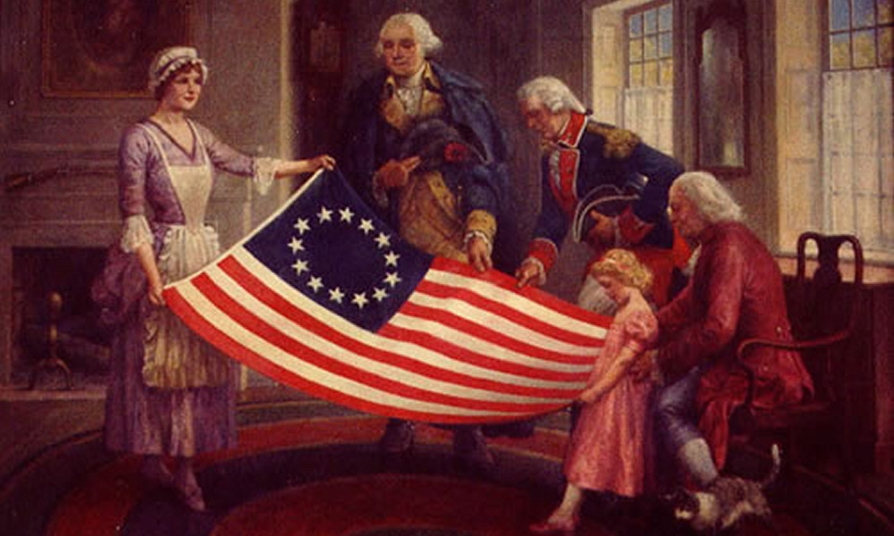

Introduction
"The tree of liberty must be refreshed from time to time with the blood of patriots and tyrants." - Thomas Jefferson
The history of the United States' formation is a complex narrative that intertwines the journeys of 13 British colonies towards independence, self-governance, and the establishment of a nation built on principles of freedom and democracy.
In 1620, a ship named “Mayflower” (from the English word “mayflower”) left the port of Plymouth with 102 Puritans who had fled England due to religious persecution, known as the Pilgrim Fathers. During the voyage, they signed the Mayflower Compact, a self-governance agreement. In December 1620, the Pilgrim Fathers landed near Cape Cod (Massachusetts) and decided to stay there. This day (December 22) is celebrated annually in the United States as Pilgrim Fathers Day.
They founded Virginia, and later 12 more colonies. Eight colonies were royal (Virginia, North and South Carolina, Georgia, Massachusetts, New Hampshire, New York, and New Jersey). Three colonies (Maryland, Pennsylvania, and Delaware) belonged to private individuals, and two (Connecticut and Rhode Island) were self-governing. Many settlers were Protestants who were driven out of their homeland due to religious beliefs. In the northern colonies, the land belonged to small farmers. They cultivated the land themselves and hired workers when necessary. In the southern colonies (Virginia, Carolina, Georgia), the land was obtained by English aristocrats. They created plantations on them to grow cotton and tobacco. The workforce consisted of black people who were imported from Africa. The number of slaves reached 60% of the population.
Until 1774, the colonies were independent and separate from each other. But thanks to the efforts of the prominent public figure B. Franklin, a union was formed, which included the future first 13 states of the United States. The list consisted of 9 provinces:
- New Hampshire
- Massachusetts Bay
- New Jersey
- New York
- Pennsylvania
- Maryland
- South Carolina
- North Carolina
- Georgia
In addition to the provinces, 4 colonies entered the Union:
- Rhode Island and Providence Plantations
- Connecticut
- Delaware
- Virginia
When George III ascended to the throne of England, he wanted to strengthen his power by plundering the colonies. A stamp duty law was introduced - a tax that had to be paid by everyone who printed agreements, documents, newspapers, even playing cards. In 1763, the king issued a decree banning settlement in western lands. The interests of fur traders were protected, but this decree outraged farmers who needed land. The English government banned the opening of factories, and industrial goods were imported into the colonies at inflated prices. For example, in 1750, it was allowed to smelt iron and iron in the colonies, but there was still a ban on their processing. Shipowners were prohibited from using non-English sailcloth. It was ridiculous: in 1732, the export of felt hats from the colonies was banned.
Although the stamp duty was repealed the following year, the conflict remained. A boycott of English goods began. In 1773, a group of Americans in Boston, dressed as Indians, threw boxes of tea into the sea. This “Boston Tea Party” marked the beginning of the struggle. During the War of Independence, all colonists divided into two camps: patriots (supporters of independence) and loyalists (supporters of the legitimate authority of the English king).
The English authorities closed the port of Boston for trade. In response, uprisings began in all 13 colonies. In September 1774, the First Continental Congress met in Philadelphia, attended by 56 representatives from 12 colonies. The “Declaration of Rights” was adopted, condemning England’s policy and defending the colonies’ right to life, liberty, and property. The colonies began to create armed units.
In April 1775, the first armed clashes between the English army and the colonists took place under Lexington and Concord. The War of Independence (1775-1783) began in North America.
The colonies declared themselves independent countries - states. Virginia was the first to do so. During the war, in 1776, the “Declaration of Independence of the United States” was signed by 13 states, which raised the fighting spirit of Americans. Volunteers from Europe began to arrive in America - the most famous of them were General Lafayette from France and Kosciuszko from Poland.
The story of the first 13 American states is a multifaceted tapestry woven with threads of exploration, revolution, and unwavering pursuit of self-governance. These states, once British colonies, birthed the United States of America, shaping its character and defining its destiny.